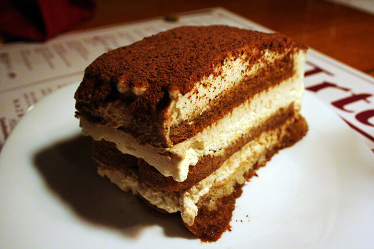

Tiramisu
Tiramisu is a famous no-bake Italian dessert featuring coffee-soaked ladyfingers (savoiardi) layered with a rich, whipped mixture of mascarpone cheese, eggs, and sugar, topped with cocoa powder. Meaning “pick me up” in Italian, it is known for its light yet creamy texture, blending bitter espresso with sweet cream, often spiked with Marsala wine or rum.
Ingredients
- 1½ heavy whipping cream (360 ml)
- 8 ounce container of mascarpone cheese (room tempreature)
- ⅓ cup grandulated sugar (67g)
- 1 teaspoon vanilla extract (5ml)
- 1½ cups cold espresso
- 3 tabesppons coffee flavored liqueur (optinal. 45ml)
- 1 package of lady fingers
- Cocoa powder for dusting on top!
Instructions
- In a mixing bowl, combine whipping cream and beat at medium speed with electric mixers or a stand mixer. Gradually incorporate sugar and vanilla, continuing to beat until the mixture forms stiff peaks. Gently fold in mascarpone cheese until fully integrated, then set aside.
- In a shallow bowl, combine coffee and liqueur. Briefly dip lady fingers in the mixture, ensuring they are not soaked, and arrange them in a single layer at the base of an 8×8-inch or comparable pan.
- Smooth half of the mascarpone mixture over the top layer, then add another layer of dipped ladyfingers, followed by the remaining mascarpone cream spread over the surface.
- Dust the surface generously with cocoa powder using a fine mesh strainer, then refrigerate for a minimum of 3-4 hours or up to overnight prior to serving.
Subcatergory of Instructions (espresso)
- Preheat your coffee machine and let it heat up for at least 15 minutes
- Grind fresh espresso roast coffee to a fine powdery consitency
- Distribute the grounds evenly in the portafilter and tam straight down with consistent pressure to create a level puck
- Lock the portafilter into the group head and start the shot immediately aim for a 25- 30 second extration time
- Lastly make sure to make the espresso in a container that has a lid and put in the refrigerator to cool down for about 15 minutes!